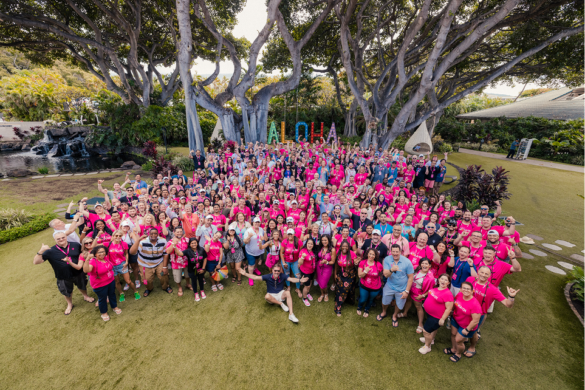

nadine tabing
UX & UI & PRODUCT DESIGN
T-Life: MOBILE APP DESIGN
I’ve been at T-Mobile since 2020, doing mobile design and web design (desktop and mobile).
Recently, I’ve been working on T-Life, T-Mobile’s flagship app that allows users to view and manage their account.
On a team with two other designers, I redesigned T-Life’s Manage Tab to:
- Surface elements considered most important to users (ex. billing information)
- Prioritize transparency and self-service tools to decrease Care calls (ex. allowing users to see data usage)
I also worked on the Usage screens, where users can view information about data, calls, and messages. Users can view progress toward data caps, visually view data patterns, and be alerted to trends and unusual activity.
The Usage MVP was released in December 2024, and increased revenue by $500k compared to the previous month.

In 2023, I also won T-Mobile’s PEAK Achievement award, which is T-Mobile’s highest recognition award and awarded to less than 1% of the company. We all went to Maui, where I was able to acquire the ukulele of my dreams ✨